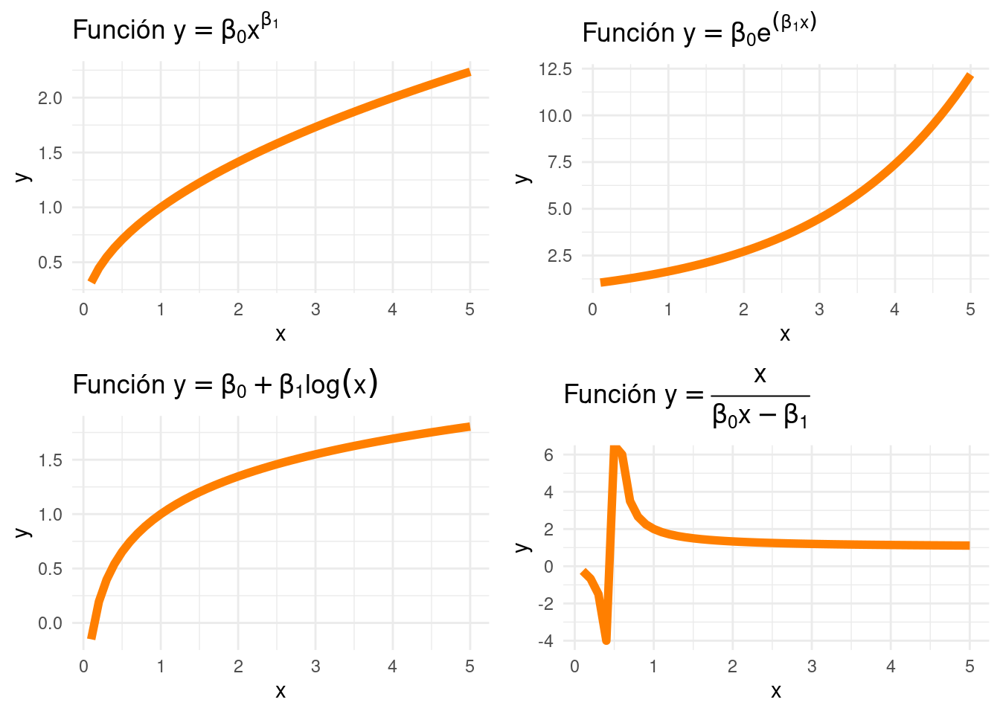
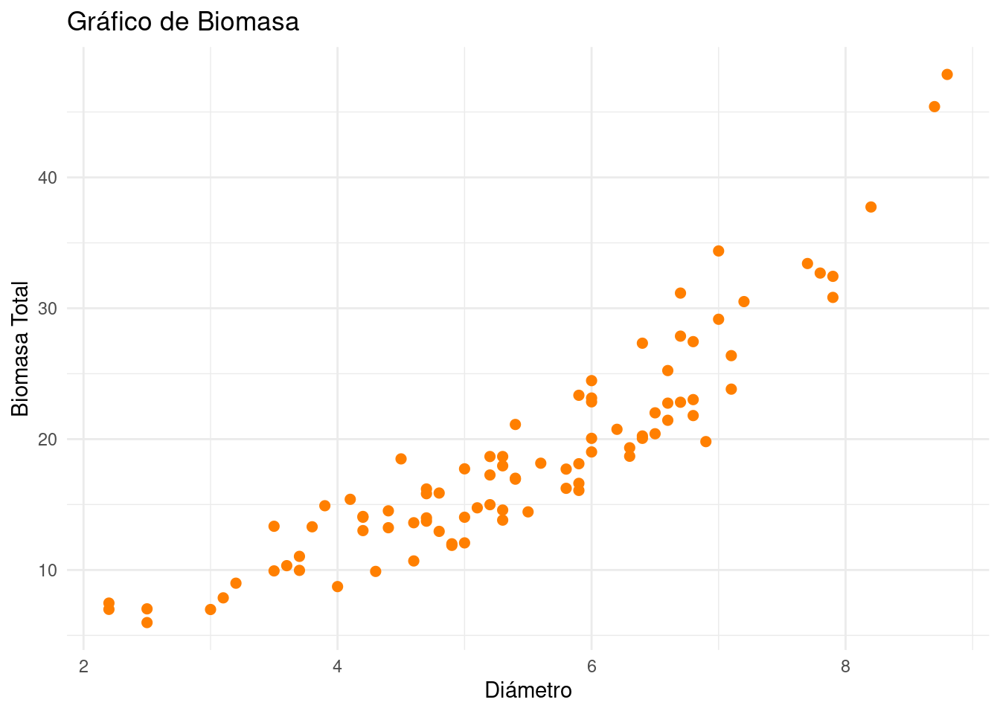

Transformaciones
Métodos y Simulación Estadística
Transformación de variables
En algunos casos el modelo lineal no es apropiado para ajustar los datos y por tanto no cumple los supuestos sobre los errores. Es necesario entonces probar otro tipo de modelo transformando las variables.

Dentro de las transformaciones más empleadas están:
| función linealizable | Transformación | forma lineal |
|---|---|---|
| \(y= \beta_{0} x^{\beta_{1}}\) | \(y^*=\log(y)\), \(x^*=log(x)\) | \(y^*= \log (\beta_{0}) + \beta_{1} x^*\) |
| \(y = \beta_{0} e^{\beta_{1}x}\) | \(y^*=\ln(y)\) | \(y^* = \ln(\beta_{0}) + \beta_{1} x\) |
| \(y = \beta_{0} + \beta_{1} log (x)\) | \(x^*=\log(x)\) | \(y^* = \beta_{0} + \beta_{1} x\) |
| \(y = \dfrac{x}{\beta_{0}x -\beta_{1}}\) | \(y^*=\dfrac{1}{y}\), \(x^*=\dfrac{1}{x}\) | \(y^* = \beta_{0} + \beta_{1} x^*\) |
Tabla 3.3 Transformación de variables e interpretación de \(\beta_{1}\)
| Modelo | Regresión | Variable dependiente | Variable independiente | Interpretación de \(\beta_{1}\) |
|---|---|---|---|---|
Lin-Lin |
\(\hspace{.8cm} Y_{i} = \beta_{0}+ \beta_{1} X_{i} + \varepsilon_{i}\) | \(Y\) | \(X\) | \(\Delta Y = \beta_{1} \hspace{.2cm}\Delta X\) |
Lin-Log |
\(\hspace{.8cm} Y_{i} = \beta_{0}+ \beta_{1} \log(X_{i}) + \varepsilon_{i}\) | \(Y\) | \(\log(X)\) | \(\Delta Y = (\beta_{1} / 100) \% \hspace{.2cm}\Delta X\) |
Log-Lin |
\(\hspace{.8cm} \log(Y_{i}) = \beta_{0}+ \beta_{1} X_{i} + \varepsilon_{i}\) | \(\log(Y)\) | \(X\) | \(\%\Delta Y = (100 \beta_{1}) \hspace{.2cm}\Delta X\) |
Log-Log |
\(\hspace{.8cm} \log(Y_{i}) = \beta_{0}+ \beta_{1} \log(X_{i}) + \varepsilon_{i}\) | \(\log(Y)\) | \(\log(X)\) | \(\%\Delta Y = \beta_{1}\% \hspace{.2cm}\Delta X\) |
Ejemplo

Como se puede observar existe una leve curvatura de los puntos que permite sospechar que existen mejores ajustes que el de la línea recta.
Transformación de variables
library(paqueteMETODOS)
data("biomasa")
modelo1=lm(bio_total ~ diametro, data=biomasa) # Lin - Lin
modelo2=lm(bio_total ~ log(diametro), data=biomasa) # Lin - Log
modelo3=lm(log(bio_total) ~ diametro, data=biomasa) # Log - Lin
modelo4=lm(log(bio_total) ~ log(diametro), data=biomasa) # Log - Log
===============================================================
Dependent variable:
-------------------------------------------
bio_total log(bio_total)
(1) (2) (3) (4)
---------------------------------------------------------------
diametro 5.103*** 0.278***
(0.251) (0.011)
log(diametro) 23.369*** 1.344***
(1.564) (0.058)
Constant -9.020*** -19.909*** 1.328*** 0.618***
(1.413) (2.629) (0.060) (0.098)
---------------------------------------------------------------
Observations 90 90 90 90
R2 0.825 0.717 0.887 0.858
Adjusted R2 0.823 0.714 0.885 0.857
Residual Std. Error 3.435 4.362 0.145 0.162
F Statistic 413.961*** 223.224*** 687.562*** 532.232***
===============================================================
Note: *p<0.1; **p<0.05; ***p<0.01Transformación Box-Cox
La transformación de la variable respuesta \(Y\) es útil para dar solución a problemas tanto de validación de suspuesto como también de mejoras en el nivel de ajuste del modelo. Poder detectar cuál de las anteriores trasformaciones es la más apropiada podría se un trabajo de error ensayo, probando una a una las transformaciones, generando una de manda de tiempo.
El método de box-cox permite encontrar el valor de \(\lambda\) óptimo para la función :
\[g_{\lambda}(y) = \left \{ \begin{matrix} \dfrac{y^{\lambda}-1}{y} & \mbox{ si } \lambda \neq 0\\ & \\ log(y) & \mbox{ si } \lambda =0 \end{matrix}\right.\]
El valor \(\dfrac{y^{\lambda}-1}{y}\) se puede simplificar por \(y^{\lambda}\) cuando el modelo es predictivo. El valor máximo de este valor podrá orientar sobre la forma funcional de la variables respuesta.
La función boxcox(), del paquete MASS nos
ayuda a encontrar el valor óptimo de \(\lambda\)
La siguiente tabla nos ayuda a identificar la transformación apropiada
| \(\lambda \hspace{1.5cm}\) | -2 | -1 | -0.5 | 0 | 0.5 | 1 | 2 |
| Transformación | \(1/y^{2}\) | \(1/y\) | \(1/\sqrt{y}\) | \(log(y)\) | \(\sqrt{y}\) | \(y\) | \(y^{2}\) |
library(paqueteMETODOS)
data(biomasa)
modelo1=lm(bio_total ~ diametro, data=biomasa)
summary(modelo1)
par(mfrow = c(1,2))
boxcox(lm(biomasa$bio_total ~ biomasa$diametro, data=biomasa), lambda = -3:3)
#Se repite el proceso pero esta vez entrechando el rango de valores de lambda
bc<-boxcox(lm(biomasa$bio_total ~ biomasa$diametro), lambda = -1:1)
(lambda <- bc$x[which.max(bc$y)])
El resultado (\(\lambda =0\)) indica que la variable dependiente debe estar en escala logarítmica